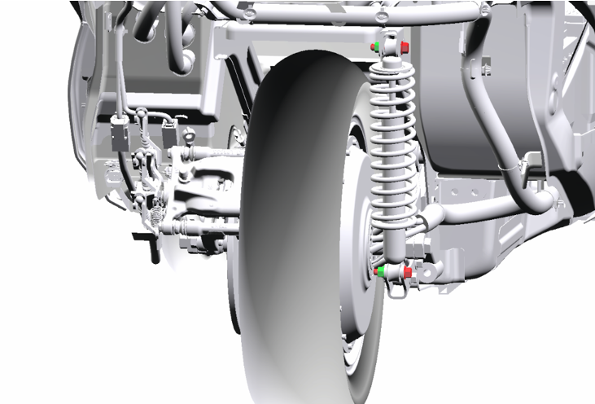
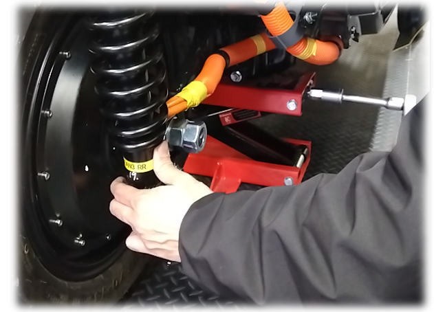
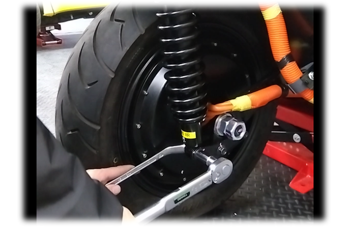

7-2-1 リヤショックアブソーバー
構成図
|
1 |
ABSORBER ASSY, SHOCK, RR (D8230-B1000-A) |
2 |
NUT, FLANGE (Z5120-00000) |
|
3 |
BOLT FLANGE, SHOCK ABSORBER, RR (D8238-00450) |
- |
- |
取り外し前作業
-
タイヤカバーを取り外す。4-1-2 外装(リヤ)
取り外し手順

1.ABSORBER ASSY, SHOCK, RR取り外し
-
ボルト、ナットを取り外す。

-
ジャッキを上昇させて、ショックアブソーバーを取り外す。
取り付け手順
1.ABSORBER ASSY, SHOCK, RR取り付け
-
ショックアブソーバーを取り付け、ボルトナットを仮締めする。
-
ジャッキダウンしタイヤを接地させる。

-
タイヤが接地した状態でショックアブソーバーの上下ボルト＆ナットを増し締めする。